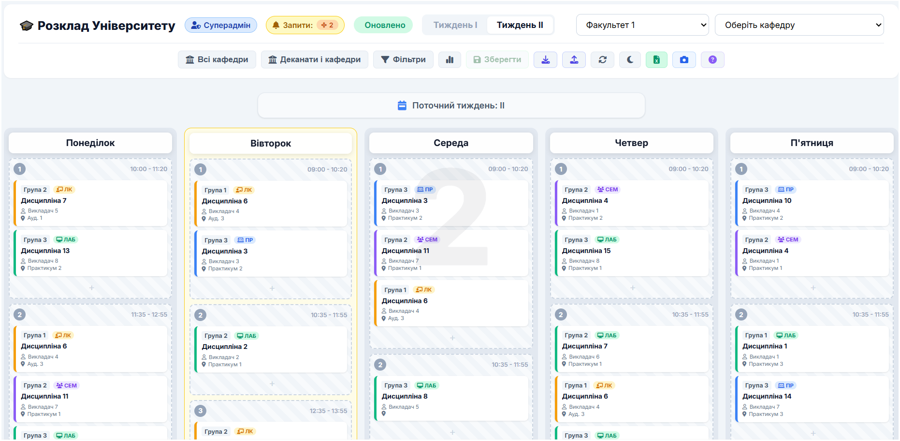
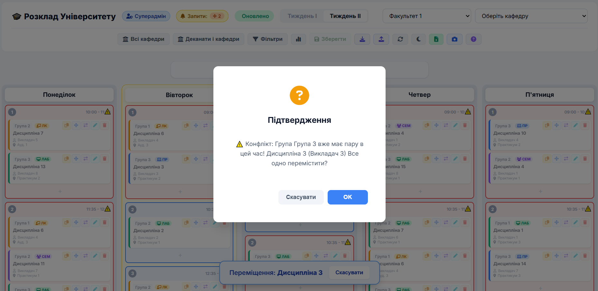
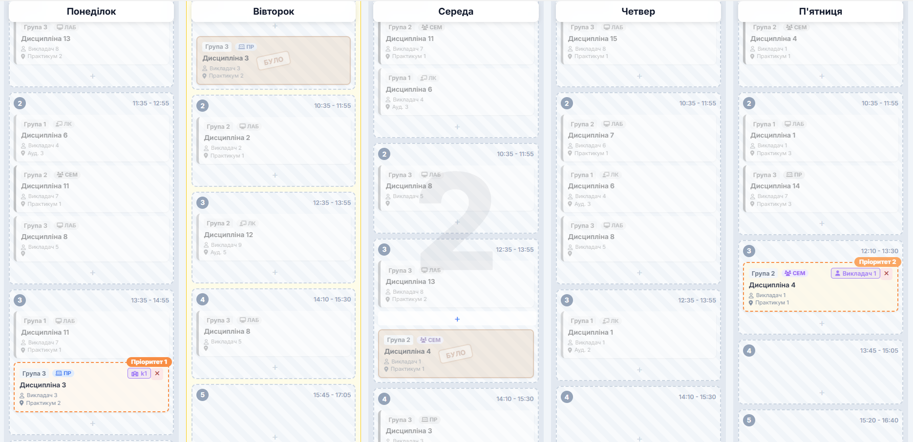
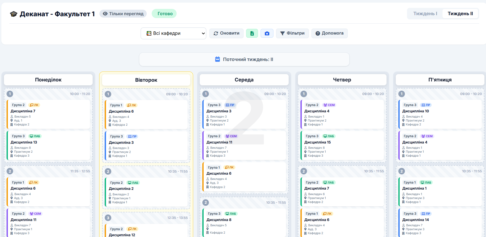
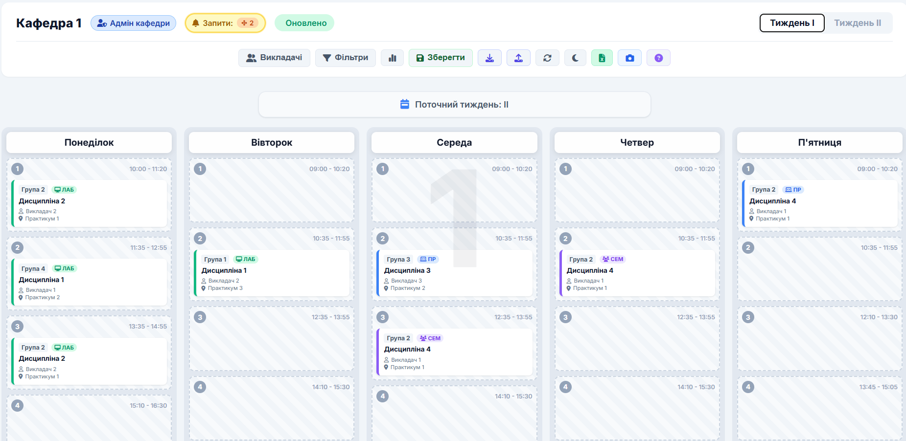
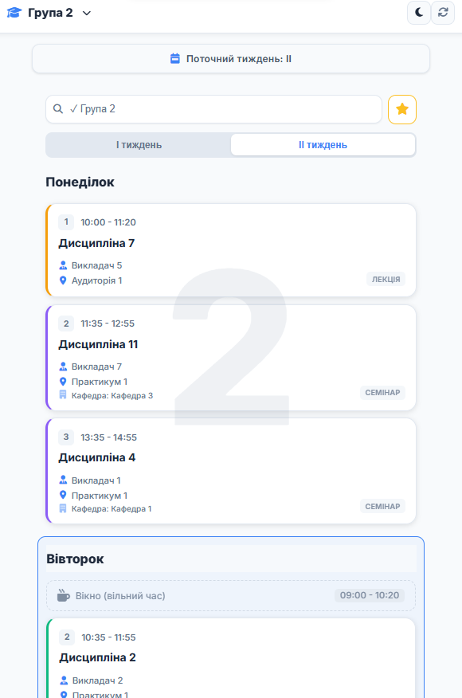
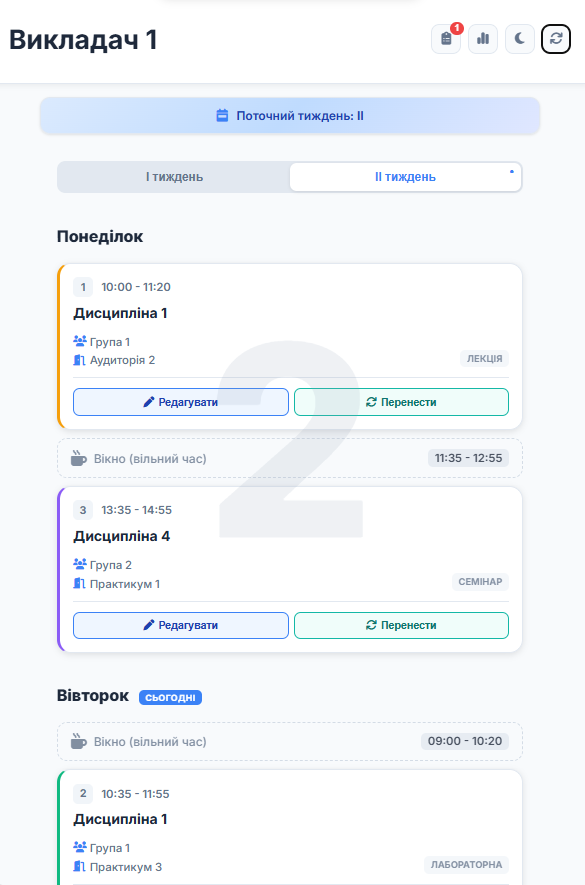

Інтелектуальна екосистема управління навчальним процесом
Повнофункціональна панель для диспетчера розкладу. Створення, редагування, перенесення пар. Робота з запитами від кафедр та викладачів.
ДемонстраціяЗведений огляд розкладу факультету. Перегляд по кафедрах, розширені фільтри, експорт в Excel та PNG.
ДемонстраціяПовне управління розкладом кафедри. Обробка запитів від викладачів, розширені фільтри, експорт в Excel та PNG.
ДемонстраціяМобільний інтерфейс для перегляду розкладу. Фільтрація по групах, офлайн режим, сповіщення про зміни.
ДемонстраціяПерсональний розклад, швидка подача запитів на перенесення занять, комунікація з диспетчером.
Демонстрація(Натисніть на зображення для збільшення)





(Натисніть на зображення для збільшення)


Складання розкладу: з 2 тижнів до 2-3 днів
Внесення змін: з 2 днів до 15 хвилин
Автоматична перевірка накладок
Скарги: зниження на 90% за семестр
Автоматичне резервне копіювання
Повна історія змін та можливість відкату
Працює в будь-якому браузері, не потребує встановлення ПЗ
Перегляд з будь-якого пристрою у будь-який час
Легко додати нові факультети, інтеграція з іншими системами
Одноразове впровадження без щомісячних ліцензійних платежів
Система архітектурно адаптована для підключення ШІ.
Автоматична генерація варіантів розкладу, а не лише перевірка конфліктів.
Об'єднання з Moodle та Google Classroom.
Автоматичне створення подій у календарях курсів та посилання на Zoom/Meet.
Створення єдиного освітнього середовища.
Розклад автоматично формує "сітку" занять у журналі, виключаючи ручне введення дат.